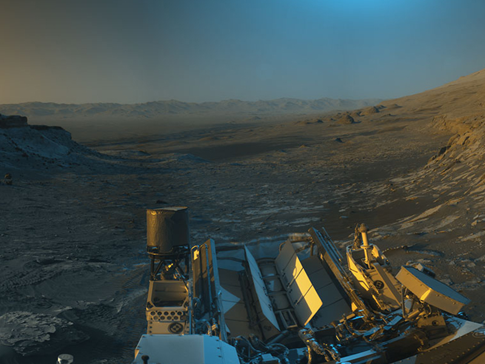
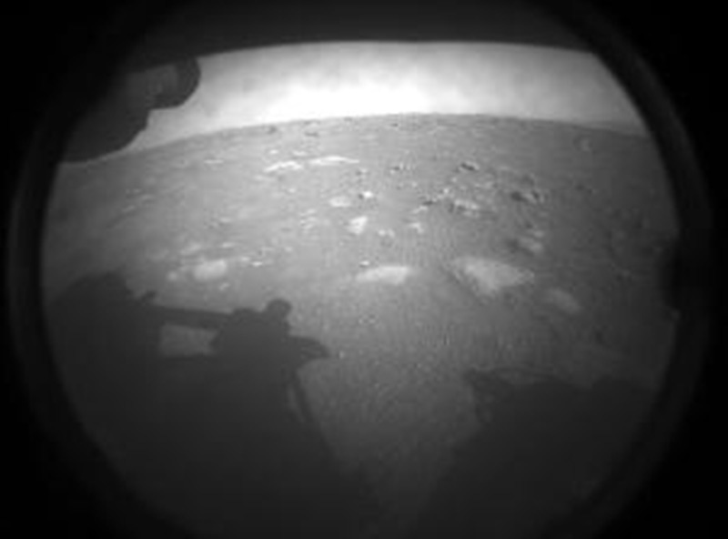

Mars, the fourth planet from the Sun, is a frigid, barren world with a thin atmosphere and dusty terrain.
Despite its uninviting environment, Mars is a dynamic planet with polar ice caps, canyons, and evidence of past
volcanic activity. It is also the most explored planet in our solar system and the only one where rovers have
been sent to explore its alien terrain. Currently, NASA has two rovers, one lander, and one helicopter exploring
the surface of Mars. The most recent rover, Perseverance, landed on the planet on February 18th, 2021, after a
203-day journey covering 293 million miles. Along with Perseverance, the Ingenuity helicopter was also sent to
Mars. In addition to these rovers, eight orbiters, including three from NASA, are studying the planet from
above. These robotic explorers have discovered evidence that Mars was once a much warmer and wetter planet with
a thicker atmosphere billions of years ago.
Namesake:
The planet Mars got its name from the Romans who named it after their god of war due to its
reddish hue, which reminded them of blood. Other ancient civilizations also named the planet based on this
characteristic, such as the Egyptians who called it "Her Desher," meaning "the red one." Presently, Mars is
commonly referred to as the "Red Planet" because the iron minerals present in its soil rust, giving its surface a
red appearance.
Life on Mars:
The presence of living organisms on Mars is not expected by scientists. Rather, they are searching for
indications of life that may have existed in the past, when Mars had a higher temperature and was full of water.

Size and distance:
Mars is approximately half the size of Earth, with a radius of 2,106 miles (3,390 kilometers). If Earth were
the size of a nickel, Mars would be about the size of a raspberry. At an average distance of 142 million miles
(228 million kilometers) from the Sun, Mars is 1.5 astronomical units away from it. An astronomical unit (AU) is
the distance from the Sun to Earth. It takes sunlight around 13 minutes to travel from the Sun to Mars at this
distance.
Orbit and its rotation:
Mars rotates around the Sun in 24.6 hours, similar to Earth's 23.9 hour day.
Its days are called sols and a year lasts 669.6 sols (687 Earth days). Mars' axial tilt is 25 degrees,
causing distinct seasons that last longer than Earth's due to its farther distance from the Sun. The seasons
vary in length because of Mars' elliptical orbit, with the longest season being spring in the northern
hemisphere (autumn in the southern) at 194 sols and the shortest being autumn in the northern hemisphere (spring
in the southern) at 142 sols. Northern winter/southern summer lasts 154 sols and northern summer/southern winter
lasts 178 sols.
Number of Moons:
The planet Mars has two tiny moons, Phobos and Deimos, which are believed to be asteroids
that were captured. They have an irregular potato-like shape because their mass is not sufficient enough to give
them a spherical shape due to the lack of gravity. The names of the two moons come from the horses that used to
pull the chariot of Ares, the Greek god of war. Phobos is the larger and closer moon to Mars, and it has many deep
grooves and craters on its surface. Unfortunately, it is slowly moving towards Mars and is expected to either
collide with the planet or disintegrate in approximately 50 million years. On the other hand, Deimos is only half
as big as Phobos and orbits Mars at a distance two and a half times farther away. It has an unusual shape and is
covered in loose dirt, which often fills its craters, making it appear smoother than its counterpart, Phobos.
Rings:
There aren't any rings around Mars at present. But in around 50 million years, if Phobos
either breaks apart or crashes into Mars, it might lead to the formation of a dusty ring encircling the planet.
Formation:
Around 4.5 billion years ago, Mars was created due to the gravitational attraction that
brought together swirling gas and dust, placing it as the fourth planet from the Sun. Mars, like other terrestrial
planets, consists of a central core, a rocky mantle, and a solid crust. Despite being half the size of Earth, it
shares similar characteristics.
Structure:
At the center of Mars lies a dense core made up of iron, nickel, and sulfur. This core has a
radius of 930 to 1,300 miles (1,500 to 2,100 kilometers). Surrounding the core is a rocky mantle that is 770 to
1,170 miles (1,240 to 1,880 kilometers) thick. Above the mantle is a crust composed of iron, magnesium, aluminum,
calcium, and potassium. The crust ranges from 6 to 30 miles (10 to 50 kilometers) in depth.
Surface:
The surface of Mars is a diverse landscape, showcasing hues of brown, gold, and tan. The
planet's red appearance is due to the process of oxidization, or rusting, of iron in its rocks, regolith,
and
dust. This dust is often blown into the atmosphere, creating a red tint when viewed from afar. Despite being
half
the size of Earth, Mars boasts a surface area comparable to that of Earth's dry land. Over time, volcanic
activity, impact craters, crustal movement, and dust storms have shaped the planet's unique topography. The
Valles Marineris canyon system, for example, stretches over 3,000 miles and is 10 times larger than Earth's
Grand Canyon. Additionally, Mars is home to the largest volcano in the solar system, Olympus Mons, which is
three
times taller than Mt. Everest and has a base comparable to the size of New Mexico.

Mars had a history of being covered in water, as evidenced by the ancient river valley systems, deltas, and
lakebeds, as well as the presence of rocks and minerals that could only have formed in liquid water. Some
indications suggest that there were massive floods on Mars around 3.5 billion years ago. Although water still
exists on Mars today, the planet's thin atmosphere makes it challenging for liquid water to persist on the
surface. Presently, water on Mars is found in the form of water-ice just below the surface in the polar regions
and in briny, or salty, water that flows seasonally down certain hills and crater walls.
Atmosphere:
The atmosphere of Mars is mostly composed of carbon dioxide, nitrogen, and argon gases, and
appears hazy and red due to suspended dust particles. Unlike Earth's blue sky, Mars' sparse atmosphere
does not provide much protection against impacts from meteorites, asteroids, and comets. The temperature on Mars
can range from 70 degrees Fahrenheit (20 degrees Celsius) to -225 degrees Fahrenheit (-153 degrees Celsius). The
planet's thin atmosphere causes heat from the Sun to easily escape, resulting in a significant temperature
difference between the feet and head of a person standing on the equator at noon. Dust storms on Mars can cover
the entire planet, and it can take months for the dust to settle after such an event.
Magnetosphere:
Present-day Mars does not possess a worldwide magnetic field, but regions of the
planet's southern hemisphere display significant magnetization, suggesting the presence of a magnetic field
from four billion years ago.